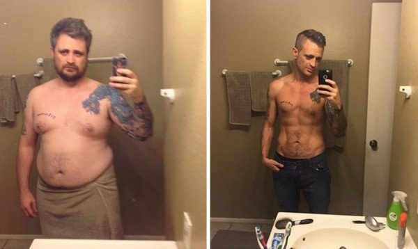
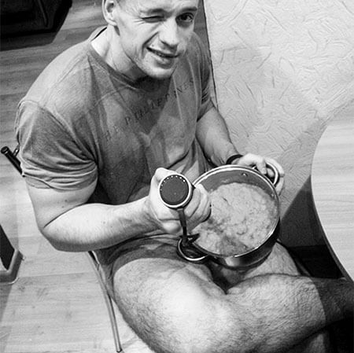
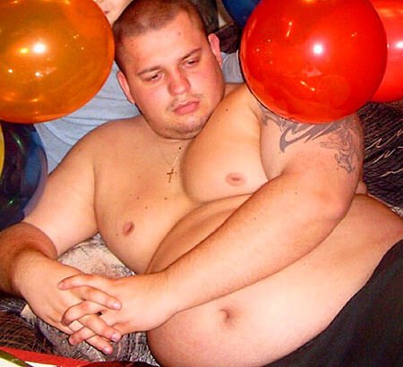

CÓMO ESTAR MEJOR: LA HISTORIA DE DANIEL, QUE PERDIÓ UN TERCIO DE SU MASA CORPORAL.
¿Has visto alguna vez a alguien tan desgraciado? ¿A alguien tan desgraciado que incluso se haya planteado suicidarse? Si no, conóceme. Esto es lo que me pasó.
- ¿Qué pasó? Os debéis preguntar. Es muy sencillo: Yo antes estaba realmente muy gordo, pesaba 132 kg, pero logré perder 50 kg.
Luego seguiremos con este tema.
Nunca había tenido muchos amigos. Cuando era pequeño, los otros niños solían burlarse de mí por estar gordo: "tarro de manteca", "ballena". Y me llamaban cosas peores que eso. Si alguna vez me invitaban, era porque querían que me ocupara de alguien. Los demás se sentían intimidados por mis lorzas.
Mis padres me decían que perdería peso a medida que creciera, y que todo iría bien. Pero, a medida que pasaba el tiempo, solo me volví más grande y gordo. A los 16 años pesaba 112 kg y llevaba ropa XXL. Naturalmente, también desarrollé problemas de salud. Me costaba caminar, tumbarme y respirar. Básicamente, todo se convertía en un problema.
Algunas de mis prendas de ropa se tenían que encargar a medida. Mis pensamientos se fueron volviendo más y más oscuros.
Sin embargo, un lugar en el cual podía relajarme y hablar con mis amigos era cuando jugaba con la X-Box. Era más fácil para mí que la gente no me viera y que no supiera absolutamente nada de mí.
En abril de , pesaba 132 kg. Mi trasero sobresalía casi 2 metros, mientras que mi pecho era la envidia de cualquier mujer. Llegados a ese punto, tenía que llevar ropa XXXL. Y para entonces ya había probado casi todo lo que una persona podía probar. También averigüé que no todo lo que había leído en varias páginas web sobre salud era cierto.
Muchos creen, erróneamente, que si dejan de comer del todo empezarán a perder peso inmediatamente. Yo creía esto, ¡pero estaba equivocado! Pasar hambre no es la mejor forma de perder peso, ¡como mínimo porque tarde o temprano caerás, devorarás aún más comida y engordarás más! Dejando a un lado los efectos nocivos para la salud que provoca el hambre en tu cuerpo.
Otro mito en el cual cree ciegamente mucha gente es: haciendo deporte perderás kilos con facilidad. ¡No, no y no! Todo depende de la fisiología de la persona. Algunas personas podrían pasar meses haciendo dieta, entrenando de forma constante en el gimnasio, y perder solo un par de kilos. Otros, por otro lado, pueden meterse entre pecho y espalda todo tipo de comida y holgazanear, y estar delgados como palos de escoba.
Tras aceptarme a mí mismo tal y como soy, decidí buscar una distracción. Así es como desarrollé mi pasión por la cocina. Me gustaba la idea de que no solo pudiera comer, sino también crear comida. Me metí tan de lleno en mi hobby que, antes de darme cuenta, se había convertido en mi pasión, mi vida y mi profesión.
Tras recibir un diploma en cocina y repostería, me contrataron en un restaurante europeo. Teniendo éxito en mi trabajo, empecé a disfrutar de mi propia existencia. Por primera vez en mi vida, sentía que me necesitaban, que realmente me necesitaban. Proporcionaba alegría a otras personas.
Tras entrar en materia en mi trabajo, intenté no pensar demasiado en el hecho de que a mis 32 años nunca había tenido novia. Mientras jugaba a juegos, me relacionaba con valentía con el sexo opuesto. Encontraba temas de conversación buenos con facilidad. Les gustaba mi voz. Pero a mí solo me gustaba una chica. Y, por supuesto, no me atrevía a conocerla en persona.
Además, mientras tanto, en el trabajo se produjo una situación que sacudió mi mundo. Aparentemente regresé al pasado. Mi pesadilla volvió a mí de nuevo. Me di cuenta de que, por mucho que huyera de mis problemas, no podía escapar a la cuestión de mi obesidad. Nunca tendría una relación real y nunca sería nada más que alguien gordo.
Mis pensamientos se vieron interrumpidos por el mensaje que me había escrito la chica del juego. Decidí que ese sería el día en el cual yo cambiaría mi vida.
Así es, chicos. Esta es la historia de cómo el amor ayuda a la gente a superar los sucesos más horribles de sus vidas.
Cuando Érica y yo nos conocimos, me sorprendió que ella parecía estar completamente a gusto con mi aspecto: estuvimos hablando toda la noche. Nunca he hablado tanto en mi vida como lo hice entonces. Compartí con ella mis inseguridades y mis miedos. Lo que me sorprendió más fue que ella no se apartó de mí, sino que me ofreció ayuda.
Y Érica mantuvo su palabra.
La mañana siguiente, me despertó alguien llamando a la puerta. Érica entró directamente en casa y fue hacia la cocina. Dejó el paquete con las cápsulas y dijo: "Tómate una, dentro de 30 minutos desayunaremos". Abrió la nevera buscando algo de comida.
Primero pensé que me iba a dar antidepresivos, pero tras una larga conversación me di cuenta de que este remedio es de los ingredientes naturales, que aceleran de forma brutal el metabolismo.
Pero resultó que las promesas no eran suficientes y, esa misma noche, Érica cogió todas sus cosas y las puso en mi armario.
Me irritó su persistencia y su decisión de sacar al hombre que había en mi. Todas las mañanas empezaban con y un desayuno abundante. Todas mis noches acababan con y algo de picar ligero (como requesón o tostadas y pescado).
Tras 3 días consumiendo , empecé a notar que me resultaba más fácil moverme. Empecé a querer moverme más. Y, cuando llegó el final de esa semana, descubrí para mi asombro que los pantalones me iban grandes.
Tras tomar algunas medidas de mi cuerpo, descubrí encantado que había perdido 2 cm de cadera, 3 cm de cintura y 50 mm de cuello. ¡Y había bajado 9,7 kg en la báscula! ¡CASI 10 kg en una SEMANA!
¡Me sentí como si hubiera movido una montaña! Y Érica me había ayudado mucho en esto.
Tras lograr lo que era una hazaña para mí, perder 9,7 kg, no podía parar. Necesitaba más.
Después de mi segunda semana consumiendo , Érica me llevó a comprar ropa nueva para mí. No pensé que comprarme ropa nueva me evocaría emociones tan grandes. Sobre todo porque estaba comprando ropa que era de una talla más pequeña que lo habitual.
Al final de la segunda semana, había bajado otros 7,3 kg. ¡Las chicas empezaron a prestarme atención! Érica a veces incluso empezaba a ponerse nerviosa al verlo, qué tonta. Iba adelgazando día a día. Me compré ropa nueva más deprisa de lo que me la podía poner y llevar. Así de rápida era mi pérdida de peso.
El producto en sí mismo no era un gasto pesado de mi bolsillo. Además, un frasco de gotas fue suficiente para mí para perder 21 kg.
Sin embargo, ¡los resultados de mi pérdida de peso acabaron siendo alucinantes! En total, perdí 57 kg en 3 meses. Durante ese periodo, bajé 4 tallas de ropa. De una XXXL a una talla M.
No ocultaré que, cuando empecé a perder más y más peso, quise estar más activo y empecé a practicar deporte. Correr por las mañanas no solo me ayudó evitar quedarme sin respiración, sino que también tensó mi piel y fortaleció mi esqueleto.
Comía lo que quería a parte de pizza con grasas solo vegetales. Gracias a y a mi novia (sí, estoy hablando de Érica), ¡me di cuenta de que nada es imposible en la vida! Lo principal es no quedarse sentado y deprimido, victimizándote.
Para todos los que me estáis leyendo, me gustaría deciros que no deberíais esperar a más adelante para empezar a perder peso, porque puede que os deis cuenta de que en un año habéis engordado otros diez kilos, y para entonces sea demasiado tarde para hacer algo al respecto. También, gracias a perder peso se ha vuelto tan fácil que incluso la persona más vaga podría sacarle provecho.
El real se puede pedir solo en la página web del distribuidor OFICIAL. Podéis encontrar un enlace aquí